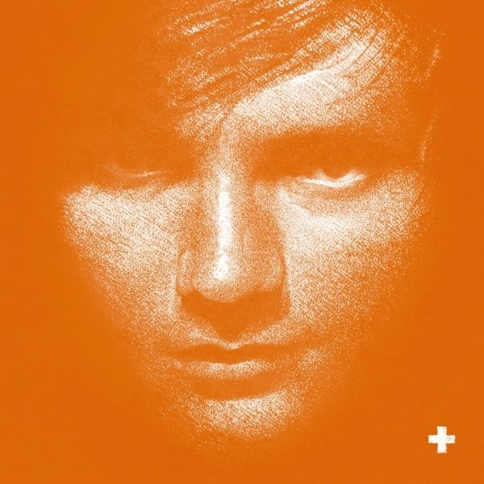
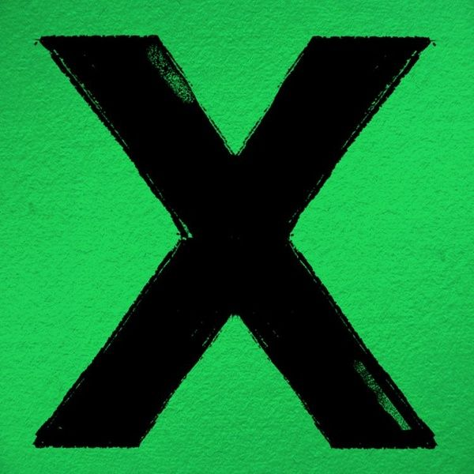
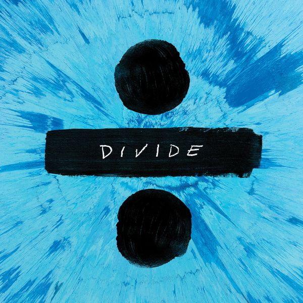
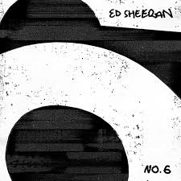

본명 : 에드워드 크리스토퍼 시런 (Edward Christopher Sheeran)
국적 : 영국
출생 : 영국
데뷔 : 2011년 1집 ''+''
앨범 목록
| 앨범 | 제목 | 출시 날짜 |
| 1집 |
'+'  |
2011. 9. 9. |
| 2집 |
'x'  |
2014. 6. 20. |
| 3집 |
'÷'  |
2017. 3. 3. |
| 4집 |
'No.6 Collaborations Project'  |
2019. 7. 12. |
에드워드 크리스토퍼 에드 시런은 잉글랜드의 싱어송라이터이다. 헵든브리지에서 태어나 프램링엄에서 자랐으며, 그곳에서 기타를 배우고 노래를 쓰며 성장했다. 2005년부터 음반을 녹음하기 시작했고, 음악 경력을 쌓기 위해 2008년 런던으로 이동했다. 2011년 초, 8번째 EP No. 5 Collaborations Project를 발매해 주목을 받게 되고, 결국 어사일럼 레코드와 계약을 하게 되었다. 2011년 6월 발매된 싱글 "The A Team"이 영국 싱글 차트 3위를 기록하고 "Lego House" 또한 성공을 거두는 데 이어, 데뷔 음반 +은 영국에서 5x 플래티넘을 기록했다. 2012년 브릿 어워드에서 최우수 신인상과 최우수 남자 솔로 아티스트상을 수상하여 2관왕에 올랐으며, "The A Team"으로 아이버 노벨로 어워드에서 최우수 노래상을 수상하였다. 2011년, 원 디렉션의 데뷔 음반 Up All Night의 수록곡 "Moments"를 썼으며, 2012년에는 테일러 스위프트의 음반 Red의 수록곡 "Everything Has Changed"의 피처링에 참가하였다. 2013년은 대부분 스위프트의 콘서트 투어 The Red Tour의 개막 공연을 하는 데 보냈다. 2013년 제55회 그래미상 시상식에서 엘튼 존과 함께 "The A Team"을 불렀으며, 올해의 노래 부문에도 노미네이트되었다. 또한, 2014년 제56회 그래미상에도 최우수 신인상에 노미네이트되었다. 2014년 4월 공개된 "Sing"은 영국, 오스트레일리아를 포함한 여러 나라의 싱글 차트에서 1위를 하였다. 2번째 음반 X는 같은 해 6월 23일 발매되었다. X는 영국 음반 차트와 미국 빌보드 200 차트에서 1위를 하였으며, 2015년 제58회 그래미 시상식에서 '올해의 노래'상을 수상하였다.